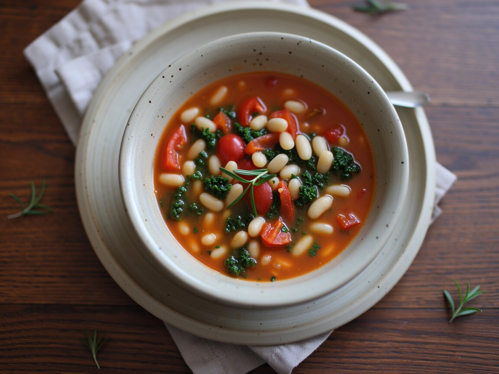

Pasta e Fagioli mit Grünkohl
Italienisches Soulfood für müde Abende.
Zutaten
- 200 g kleine Pasta (Ditalini oder Hörnchen)
- 1 Dose weiße Bohnen
- 1 Dose stückige Tomaten
- 1 Zwiebel
- 2 Knoblauchzehen
- 1 Zweig Rosmarin
- 600 ml Gemüsebrühe
- 1 Handvoll Grünkohl oder Spinat
- 2 EL Olivenöl
- Hefeflocken, Salz, Pfeffer
So geht's
- Zwiebel und Knoblauch hacken und mit dem Rosmarin im Öl 3 Minuten andünsten.
- Tomaten, Brühe und Pasta dazugeben und 10 bis 12 Minuten köcheln, ab und zu umrühren.
- Bohnen und Grünkohl in den letzten 3 Minuten mitgaren.
- Mit Salz, Pfeffer, einem Schuss Olivenöl und Hefeflocken abschmecken.
In der Box wird sie schön sämig. Zum Aufwärmen einfach einen Schuss Wasser dazu.